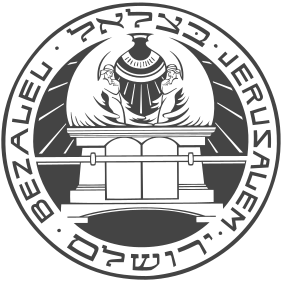

התוכנית המשולבת תעניק לסטודנטים תואר במדעי המחשב (בסוף השנה הלימודים יקנו ידע אתגרים בעיצוב תעשייתי, תקשורת חזותית, ואנימציה מלאכותית וראיה.
מדעי המחשב באוניברסיטה העברית
התוכנית המשולבת תעניק לסטודנטים תואר במדעי המחשב (בסוף השנה השלישית) ותואר מהאקדמיה לעיצוב, בצלאל (בסוף השנה החמישית). להראות פתרונות יצירתיים מתחומי המחקר ברובוטיקה, בינה מלאכותית וראיה ממוחשבת.
למידע נוסף על הלימודים באוניברסיטה במסגרת התוכנית, ניתן להיכנס לעמוד התוכנית באתר האוניברסיטה העברית.
לעמוד התוכנית באתר האוניברסיטה

עיצוב באקדמיה לאמנות ועיצוב בצלאל
התוכנית המשולבת תעניק לסטודנטים תואר במדעי המחשב (בסוף השנה השלישית) ותואר מהאקדמיה לעיצוב, בצלאל (בסוף השנה החמישית). הלימודים יקנו ידע אתגרים בעיצוב תעשייתי, תקשורת חזותית, ואנימציה מלאכותית וראיה.
למידע נוסף על הלימודים בבצלאל במסגרת התוכנית, ניתן להיכנס לעמוד התוכנית באתר בצלאל.
לעמוד התוכנית באתר בצלאל